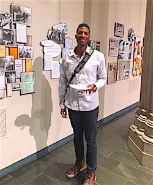
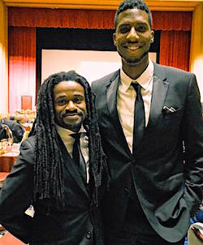

A Reflection from Centennial
It was day two of FOR's Centennial celebration. I stepped into the courtyard of Union Theological Seminary in Manhattan, New York, after the George Houser memorial, with fellow FOR staffer Rev. Osagyefo Sekou.
"One thing about FOR," he said, "the legacy is thick." We had just finished hearing stories from George's family and friends about how his work resonated beyond his lifetime. In one room, memories of George's and FOR's role in founding innovations like the freedom rides and the Congress of Racial Equality (CORE) were housed together with the dreams of present-day activists fighting for freedom all over the world, in places like Hiroshima, Japan, the occupied West Bank, and Ferguson, Missouri.
Moments like these came freely the entire weekend, our ancestors in the struggle calling through the veil, encouraging us to continue the tradition of a revolutionary orientation; namely, deepening a new human story of radical love, one potent and creative enough to rewrite the old way of vengeance.
Memory is pregnant with possibility. Though the work of FOR has contributed to the decline of violence in the world, resisting militarism -- abolishing war and its racist interplays -- remains as necessary as ever.
The recent attacks on Paris and Syria, the promises of merciless revenge from world leaders, the sustained dehumanization of Afro-descendants all over the world, remind us of our task. In times like this, our memories must do more than guide us through the graveyard of sentimentalism; memories should embolden us for the now.
What the past 100 years ought not become, though, is a mere script for future success, as if the new world will come as a logical, sequential extension of the past. As part of the keynote montage, I spoke to this point during the Centennial banquet at The Riverside Church:
"If we apply the classroom logic that a + b = c, then we will expect the strategies of the past to be the right way for the present and even for the future... The culture of our world has changed, and the cultural movements necessary to shift this world toward justice have also changed."
Instead, our logic must become no logic at all -- that we must take on the role of observers, understanding that the movement always has been circular, responsive, and closer to chaos than order -- especially if we are to move forward in this present moment of struggle and remain engaged collectively.
In these revolutionary times, we must remember that the Spirit is spirit and therefore illogical. We must remember that our success is the work of the Spirit, who knows and feels and is in all things, including the unfamiliar and profane.
In remembering this, and living this, we are joined together; otherwise, we will fragment, and the power of the river will be too weak to cut the rock of injustice.
There remains a stubborn malaise of spirit in America, as old as America herself. We are strategically positioned to heal this malady by creating a new soul for our country, but, as Jesus once cautioned when his disciples were unable to heal a demon-possessed man, this kind can only come out through prayer.
 Anthony Grimes Anthony Grimes
Interim National Organizing Director
Fellowship of Reconciliation
Images: Anthony at the FOR Centennial exhibit on the 1947 Journey of Reconciliation, credit Linda Kelly; Anthony with Rev. Osagyefo Sekou, credit Matthew Meyers; Anthony in Ferguson, MO, credit Katy Owens. Portrait courtesy of Anthony Grimes. |